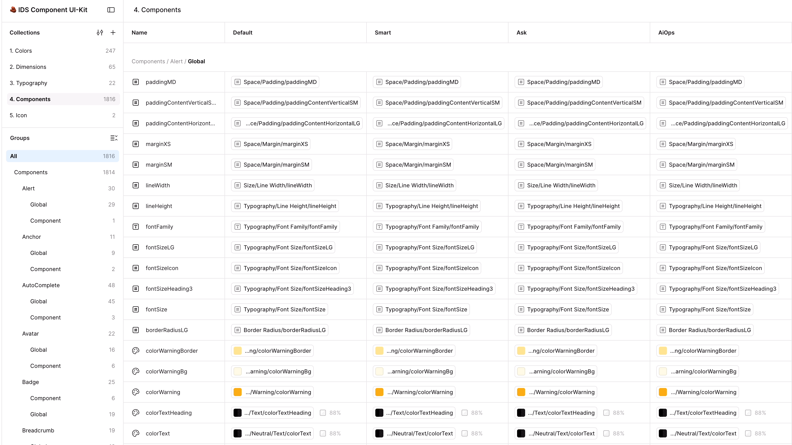

01 / 分层
颗粒度变大之前，先把边界讲清楚。
- Infrastructure（技术基础设施）
- Compute、Storage、Network 等能力，为更上层的数据与应用工作提供运行条件。EI、DI 与 AI 之间存在依赖和协作，但不能简单画成所有业务都遵循的单向层级。
- Design System（设计系统）
- Design Tokens 定义基础语义；Components 承载交互单元；业务组件、Patterns 与 Templates 帮助组织更完整的任务。它们有交叉关系，并非严格一层套一层。
相似之处在于减少重复解决已经稳定的问题。不同之处在于，技术服务首先要约定能力与运行边界；设计资产还要解释何时适用、怎样组合，以及哪些体验判断不能自动继承。
02 / 共性与变化
抽象的价值，在于让变化发生在合适的地方。
Infra Design System · Figma 组件变量实录局部

放大查看完整原图 ↗Infra Design System 通过 Design Tokens 与 Figma Variables 支持不同产品主题；Smart、Ask 的业务组件则继续表达各自的对象和操作。系统需要约定可共享的语义，也要给业务结构留下位置。例如整体圆角和 Tag 圆角可以有不同规则：定制应落在对应层级，而不是为了统一外观覆盖所有局部。
同样叫 Table，有的用于定位资源，有的用于比较安全策略，有的用于查看执行结果。我的判断顺序是先看任务与状态是否稳定相同，再决定共享组件、场景模式还是只共享基础语义。把差异全部收进一个组件，会增加使用者理解参数和维护例外的成本。
03 / 迁移与成本
基础设施要进入工作，才产生价值。
在 Space 推进共用基础，需要与前端和产品一起处理已有资产与使用方式；在已经成型的 DataSuite 上建立设计支持，则要面对历史实现、工程投入与不同产品的节奏。体验与主题可以逐步改进，平台整体统一没有一次完成。存量条件决定了改动能推进到哪里。
我持续维护设计资产，提供指南和业务定制支持，也在指导与评审中了解实际使用的困难。产品中的共性需求与设计师反馈，会成为调整组件、主题和规则的依据。可持续的系统需要让使用、支持和维护相互连接。
- 适合进入共同基础
- 多个业务反复出现、含义和行为已稳定，且能说明适用条件与维护责任。
- 适合留在业务中
- 对象、状态或处理方式依赖特定任务，仍在快速变化，需要由产品继续验证。
- 需要先评估投入
- 改动涉及历史实现、迁移与协作成本，必须结合产品节奏决定范围。
04 / AI 带来的新问题
人能理解的基础，怎样进入 AI 的工作？
AI 可以快速组合已有内容，却不会自动知道哪个规范有效、哪个业务约束优先。我参与建设的 Design Prephase 是团队公认的最佳实践，帮助分清前期工作的输入与交接；Infra Design System 提供组件与语义基础，两者服务不同阶段。